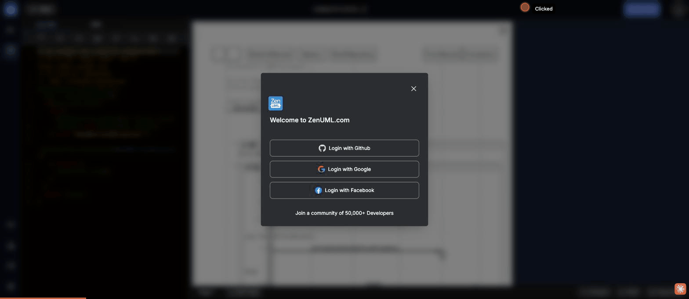

Test scenario: Share Link & My Library — sharing, collaboration, diagram management · ZenUML Web Sequence · 2026-05-09
This is the third time the same generic "Welcome to ZenUML.com" login modal appeared unexpectedly: triggered by PNG export (Case 02), Share Link, and potentially other actions. The modal gives zero context about why the user needs to sign in. This is a systemic anti-pattern — every auth-gated action should explain its value proposition at the moment of interruption.

"Share Link" is the most prominent button in the app (top-right, blue, always visible). Clicking it immediately shows a login wall. There is no URL-based sharing, no public link, no embed code, no "share without account" path — the core sharing value proposition is completely inaccessible to new users.
The identical "Welcome to ZenUML.com" modal fires for PNG export, Share Link, and likely other features. No context is given about what the user was trying to do or what they'll get by signing in. Users who clicked "Share Link" see no mention of sharing.
New diagrams get an auto-generated title using a non-standard date-time format (M-D-HH:MM). It's unclear if "9-5" is May 9th or September 5th, what timezone "23:24" refers to, and why a timestamp is used instead of a sequential number. Compare: Google Docs uses "Untitled document", Figma uses "Untitled", VS Code uses "Untitled-1".
"Untitled 9-5-23:24"
"Untitled diagram" or "My Diagram 1"
The empty state for My Library says "Nothing saved yet." but gives no instructions for how to save, no "Sign in to access your saved diagrams" CTA, and no explanation that cloud save requires authentication. Users are left in a dead end.
Clicking the folder icon replaces the left panel (editor) with the My Library panel. There is no way to see both the library and the editor simultaneously. Users who want to find a saved diagram and compare it to their current work must constantly toggle panels.
Three small icon buttons appear next to "New Folder" in the My Library header. None have labels, visible tooltips, or accessible names. Their functions (refresh list, import, export) are non-obvious from the icons alone.